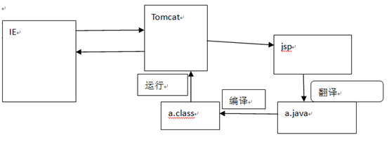

1.JSP什么？
java Server Page java服务器页面
jsp=html+java代码
因为Servlet存在输出html页面时过于复杂，繁琐
为了更好利用Html的显示功能，和java代码对于后台操作的简单易用，功能强大的物点
html+java=jsp
2.如何学好JSP?
学好JSP就是时刻去想JSP所对应的Servlet
jsp实现原理:就是Servlet
第一次访问JSP时会做这个工作
扩展名 .jsp ---->(翻译).java---------->(编译).class
把servlet作为web应用中的控制器组件来使用，而把JSP技术作为数据显示模板来使用。
java Server Page java服务器页面
jsp=html+java代码
因为Servlet存在输出html页面时过于复杂，繁琐
为了更好利用Html的显示功能，和java代码对于后台操作的简单易用，功能强大的物点
html+java=jsp
2.如何学好JSP?
学好JSP就是时刻去想JSP所对应的Servlet
jsp实现原理:就是Servlet
第一次访问JSP时会做这个工作
扩展名 .jsp ---->(翻译).java---------->(编译).class

把servlet作为web应用中的控制器组件来使用，而把JSP技术作为数据显示模板来使用。
3.JSP语法:
HTML内容，定义了网页的基本骨架，即定义了页面的结构和外观。JSP模版元素
JSP表达式JSP表达式语法：<%= 变量或表达式 %>声明一个表达式,注意表达中不能有分号。JSP引擎在翻译脚本表达式时，会将程序数据转成字符串，然后在相应位置用out.print(…) 将数据输给客户端。JSP脚本片断JSP脚本片断中只能出现java代码，不能出现其它模板元素， JSP引擎在翻译JSP页面中，会将JSP脚本片断中的Java代码将被原封不动地放到Servlet的_jspService方法中，对应的Servlet中应该是service()方法的方法体。

JSP声明：
<%！ java代码 %
而Jsp声明中的java代码被翻译到_jspService方法的外面。相当于全局的。JSP声明可用于定义JSP页面转换成的Servlet程序的静态代码块、成员变量和方法 。
SP隐式对象的作用范围仅限于Servlet的_jspService方法，所以在JSP声明中不能使用这些隐式对象。
语法：
JSP注释<%-- --%>为JSP注释，不会加入到service(),在客户端也查看不到.小脚本中可以写java注释 // /* */
<!-- --> 代表是html注释
它主要是通过out.write(“<!-- -->);
JSP指令基本语法： <%@ 指令 属性名="值" %>
page指令
- JSP 引擎自动导入下面的包：
java.lang.*
javax.servlet.*
javax.servlet.jsp.*
javax.servlet.http.*- 可以在web.xml文件中使用<error-page>元素为整个WEB应用程序设置错误处理页面，其中的<exception-type>子元素指定异常类的完全限定名，<location>元素指定以“/”开头的错误处理页面的路径。 如果设置了某个JSP页面的errorPage属性，那么在web.xml文件中设置的错误处理将不对该页面起作用。
<error-page>
<error-code>404</error-code>
<location>/error.jsp</location>
</error-page>
<error-page>
<exception-type>java.lang.Exception</exception-type>
<location>/error2.jsp</location>
</error-page>- JSP引擎会根据page指令的contentType属性生成相应的调用ServletResponse.setContentType方法的语句。 page指令的contentType属性还具有说明JSP源文件的字符编码的作用。
4.如何解决JSP引擎翻译JSP页面时的中文乱码问题<%@ page language="java" import="java.util.*" pageEncoding ="UTF-8"%>

通过page指令的contentType属性说明JSP源文件的字符集编码page指令的pageEncoding属性说明JSP源文件的字符集编码
Include指令
语法: <%@ include file=“被包含组件的绝对URL或相对URL"%>Include指令所实现的是静态包含，发生在产生java代码的阶段（先拼装在一起再翻译）。<jsp:include />动态包含:会产生两个java文件，它是在运行时把被包含的对象引入进来（先翻译为两个.Java文件，然后在运行的时候组装在一起）。taglib指令
Taglib指令用于在JSP页面中导入标签库<%@taglib uri="http://java.sun.com/jsp/jstl/core" prefix="c" %>
JSP标签<jsp:include>动态包含<jsp:forward>实现页面转发
<jsp:param>实现参数传递,通常与<jsp:include>和<jsp:forward>一起使用JSP内置对象
pageContext
PageContext
session
HttpSession
Session=true为开
application
ServletContext
config
ServletConfig
out
JspWriter
Response.getWriter()作用一样
page
Object
this
request
HttpServletRequest
response
HttpServletResponse
exception
Throwable
isErrorPage=true
Out对象输出数据：
输出:ba
要输出ab:
解决方法：1.out.flush();
2.设置page指令的buffer属性为none
如何查找JSP页面中的错误JSP模版元素


JSP注释
<%-- --%>:用它会忽略里面的代码，不翻译
<%
//
/*
*/
%>
JSP声明
注意用声明的方式，写的代码会出现在service（）方法外部
<%!
方法声明
成员变量声明
静态代码块声明
%>
JSP指令
<%@指令名 属性名="值" 属性名="值" %>
page
import属性：
import="java.util.*,java.text.*"
<%@page import="java.text.SimpleDateFormat"%>
<%@ page language="java" import="java.util.*" pageEncoding="UTF-8"%>
errorPage="error.jsp"
还可以配置web.xml配error-page，如果都配置了并且能处理，那么用errorPage
isErrorPage="false" 是一个exception开关，改为true就有
isELIgnored="false"不会忽略EL，
contentType="text/html; charset=UTF-8"与response.setContentType（）一样
pageEncoding="UTF-8":指明了保存和读取jsp页面时采用什么编码
在没有contentType时，同时还有contentType的作用
常用的属性:
import pageEncoding
include
包含
静态包含
它是在翻译时将被包含的文件直接加入到包含的页面中
动态包含：
它会先将被包含的文件进行翻译，编译
然后，在运行时将被包含的文件加入进来
taglib
引入标签库的
<%@taglib uri="http://java.sun.com/jsp/jstl/core" prefix="c" %>
JSP标签
<jsp:标签名 />
<jsp:include page="/included4.jsp"></jsp:include>
<jsp:forward />
<jsp:param/>
JSP内置对象
就是jsp预先定义好的一些对象，这样程序员在使用时就可以很方便的使用了
pageContext : PageContext这个是重点，还没讲
1.作为四个域范围的其中一个，只作用于当前页面
setAttribute();
getAttrbiute();
removeAttribute();
2.可以用它取操作其它三个域范围(application,session,request)中的数据
pageContext.setAttribute("rp", "rp", PageContext.REQUEST_SCOPE);
PageContext.REQUEST_SCOPE
.SESSION_SCOPE
.APPLICATION_SCOPE
3.可以用它去得到其它8个jsp内置对象
4.findAttribute(); //从四个域作用范围中按pageContext,request,session,application顺序依次查找
5.实现转发和包含
pageContext.forward("/pageContextForward.jsp");
pageContext.include("/pageContextForward.jsp");
application :ServletContext
session :HttpSession
request :HttpServletRequest
response :HttpServletResponse
config :ServletConfig
out:JspWirter
exception :Throwable
page :this Object
总结：四大域作用范围
ServletContext(application):作用范围最广,用于实现全局范围共享数据
实际运用：网站计算器,聊天室
HttpSession (session):只适于本次会话，一般认为跟浏览器有关
可以在本次会话中多次请求中实现数据花享
实际运用:登录信息,验证码，购物车，防表单重复提交
HttpServletRequest(request):本次请求(转发也可以)
实际应用：当每次请求时数据都要求实时刷新，这时就应当放在这个范围
PageContext(pageContext):只适合当前页面，范围太小，一般很少使用!!
EL:
1.什么是EL?
Expression Language:表达式语言
2.作用?
用于获取域中的数据，并显示
//从四个域作用范围中按pageContext,request,session,application顺序依次查找
3.实现原理
就是用pageContext.findAttribute()来实现从域中查找
4.写法
${域范围.key}------------->没找到,为空"",没有null概念
域范围：
pageScope
requestScope
sessionScope
applicationScope
作用：
1.取对象的属性
其实是调用它的getter()方法
2.取集合
3.empty 与三元运算符
4. 11个EL隐式对象
pageContext EL,jsp内置对象
pageScope
requestScope
sessionScope
applicationScope
param
paramValues
header
headerValues
cookie
initParam
5.定义函数
<%-- --%>:用它会忽略里面的代码，不翻译
<%
//
/*
*/
%>
JSP声明
注意用声明的方式，写的代码会出现在service（）方法外部
<%!
方法声明
成员变量声明
静态代码块声明
%>
JSP指令
<%@指令名 属性名="值" 属性名="值" %>
page
import属性：
import="java.util.*,java.text.*"
<%@page import="java.text.SimpleDateFormat"%>
<%@ page language="java" import="java.util.*" pageEncoding="UTF-8"%>
errorPage="error.jsp"
还可以配置web.xml配error-page，如果都配置了并且能处理，那么用errorPage
isErrorPage="false" 是一个exception开关，改为true就有
isELIgnored="false"不会忽略EL，
contentType="text/html; charset=UTF-8"与response.setContentType（）一样
pageEncoding="UTF-8":指明了保存和读取jsp页面时采用什么编码
在没有contentType时，同时还有contentType的作用
常用的属性:
import pageEncoding
include
包含
静态包含
它是在翻译时将被包含的文件直接加入到包含的页面中
动态包含：
它会先将被包含的文件进行翻译，编译
然后，在运行时将被包含的文件加入进来
taglib
引入标签库的
<%@taglib uri="http://java.sun.com/jsp/jstl/core" prefix="c" %>
JSP标签
<jsp:标签名 />
<jsp:include page="/included4.jsp"></jsp:include>
<jsp:forward />
<jsp:param/>
JSP内置对象
就是jsp预先定义好的一些对象，这样程序员在使用时就可以很方便的使用了
pageContext : PageContext这个是重点，还没讲
1.作为四个域范围的其中一个，只作用于当前页面
setAttribute();
getAttrbiute();
removeAttribute();
2.可以用它取操作其它三个域范围(application,session,request)中的数据
pageContext.setAttribute("rp", "rp", PageContext.REQUEST_SCOPE);
PageContext.REQUEST_SCOPE
.SESSION_SCOPE
.APPLICATION_SCOPE
3.可以用它去得到其它8个jsp内置对象
4.findAttribute(); //从四个域作用范围中按pageContext,request,session,application顺序依次查找
5.实现转发和包含
pageContext.forward("/pageContextForward.jsp");
pageContext.include("/pageContextForward.jsp");
application :ServletContext
session :HttpSession
request :HttpServletRequest
response :HttpServletResponse
config :ServletConfig
out:JspWirter
exception :Throwable
page :this Object
总结：四大域作用范围
ServletContext(application):作用范围最广,用于实现全局范围共享数据
实际运用：网站计算器,聊天室
HttpSession (session):只适于本次会话，一般认为跟浏览器有关
可以在本次会话中多次请求中实现数据花享
实际运用:登录信息,验证码，购物车，防表单重复提交
HttpServletRequest(request):本次请求(转发也可以)
实际应用：当每次请求时数据都要求实时刷新，这时就应当放在这个范围
PageContext(pageContext):只适合当前页面，范围太小，一般很少使用!!
EL:
1.什么是EL?
Expression Language:表达式语言
2.作用?
用于获取域中的数据，并显示
//从四个域作用范围中按pageContext,request,session,application顺序依次查找
3.实现原理
就是用pageContext.findAttribute()来实现从域中查找
4.写法
${域范围.key}------------->没找到,为空"",没有null概念
域范围：
pageScope
requestScope
sessionScope
applicationScope
作用：
1.取对象的属性
其实是调用它的getter()方法
2.取集合
3.empty 与三元运算符
4. 11个EL隐式对象
pageContext EL,jsp内置对象
pageScope
requestScope
sessionScope
applicationScope
param
paramValues
header
headerValues
cookie
initParam
5.定义函数